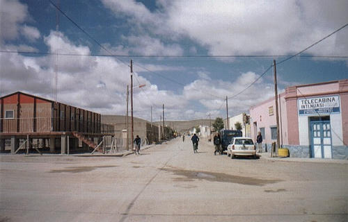
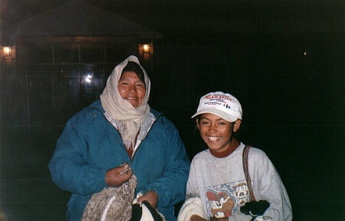
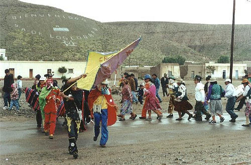
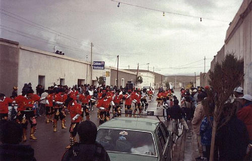
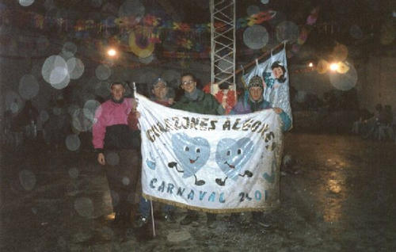
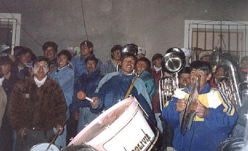
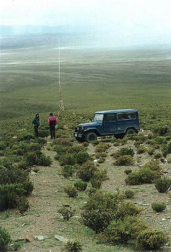

Ainda "de cara" com as primeiras visões dos andes, chegamos a Santo Antonio de Los Cobres, cidade minúscula, encrustada entre montanhas de todos os lados, que vive basicamente das minas de extração próximas.

A cara de uma cidade andina
Local: Santo Antonio de Los Cobres - ARGENTINA - 2000
Uma rua típica de cidade andina, sem carros (fora o nosso), apenas bicicletas, pedestres e casas baixas, de somente um piso. Essa é uma cidadezinha muito aconchegante com cerca de 2000 habitantes, boa para dar uma parada e se aclimatar com a altitude elevada (3750m), pois dali 26km é o ponto mais alto da travessia dos andes, a 4650m!

A cara do povo andino
Local: Santo Antonio de Los Cobres - ARGENTINA - 2000
O retrato da fisionomia do povo andino: semblante indígena e um sorriso no rosto. Elas são moradoras da cidade, onde mesmo no verão se dorme com um monte de cobertas e blusas de lã. Se não me engano, o nome da menina é Sônia (muito simpática) e elas estão vendendo blusas e meias de pêlo de alpaca.
O carnaval nesta cidade é algo que vale a pena conferir. É na mesma época que o nosso, porém dura mais, tendo uma pausa da quarta de cinzas até a sexta e continua no sábado e domingo seguintes.

Festa de carnaval em s.a. Cobres
Local: Santo Antonio de Los Cobres - ARGENTINA - 2001
Como aquecimento para as danças e para chamar o povo às ruas, uma fila indiana de pessoas fantasiadas (fantasias feitas de retalhos e peças normais de roupa, sem o glamour desnecessário das nossas) atravessa a cidade acompanhada de uma banda de fanfarra tocando musicas regionais andinas. Por presenciarmos de perto esta passagem, fomos "batizados" com a neve artificial que eles jogam uns nos outros, é uma espuma que desaparece rápido e não molha.
Logo em seguida acontecem os desfiles de carnaval, bem diferentes dos nossos, sem putaria.

Desfile de carnaval em s.a. Cobres
Local: Santo Antonio de Los Cobres - ARGENTINA - 2001
São vários "clubes" que têm seu uniforme e bandeira e fazem apresentações de dança na rua. A música é salsa, rumba e carnavalito, e é gravada. Os homens trazem chocalhos nas botas para incrementar a dança, que tem passos ensaiados e mistura movimentos giratórios com saltos e batidas de palmas e pé no chão. As mulheres fazem outros passos, mais simples e sem pulos, e no final todos dançam juntos em pares. Muito legal de ver e ouvir.

Baile de carnaval em s.a. Cobres
Local: Santo Antonio de Los Cobres - ARGENTINA - 2001
À noite após os desfiles do dia, acontecem bailes nos clubes da cidade. Conhecemos um argentino de Salta chamado Daniel (na foto) que gentilmente nos explicou tudo sobre o carnaval deles e nos levou a todos os clubes da cidade para conhecer as festas. Valeu cara!
Depois dos bailes, uma banda boliviana acompanhada de pessoas fantasiadas e de quase toda a população atravessa a cidade parando na frente de casas onde são "convidados" a ficar, e ali tocam e dançam, enquanto o dono da casa proporciona bebida a todos os presentes, de graça.

Banda boliviana que tocou para nós
Local: Santo Antonio de Los Cobres - ARGENTINA - 2001
Especialmente emocionante, foi quando chegamos perto, a banda já tinha parado de tocar e ia jantar, mas quando souberam que haviam "turistas do Brasil" chegando, rapidamente pegaram novamente seus instrumentos, esperaram a gente chegar ali na frente deles e quando fizemos sinal, eles começaram a tocar.
Foi muito forte a emoção de um acontecimento desses, de se sentir especial e da banda tocar 2 músicas a mais por você estar ali. A hospitalidade desse povo é algo impressionante.
Fora o carnaval, o chá de folha de coca e a subida a pé no morro próximo, a cidade tem outras atrações. Pegando a estrada em direção à jujuy (diz-se rurúi), à esquerda encontramos algumas fazendas grudadas em montanhas (único lugar arável próximo) com estradinhas que com 4x4 dá pra subir alto e ter uma visão boa da região.

Subindo montanhas próximas
Local: Santo Antonio de Los Cobres - ARGENTINA - 2001
Pode não parecer, mas o risco vertical na foto é uma estrada de chão que some da vista e leva a ... Não sabemos.